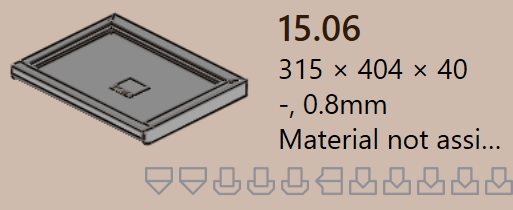

Teilestatus
Wenn ein Teil in TruSmartCAM importiert wird, wird die relevante Blechbearbeitungstechnologie automatisch auf das Teil angewendet. Im Rahmen dieses Prozesses führt TruSmartCAM eine Validierung durch.
Der Teilestatus wird direkt auf der Teilekachel unterhalb des Teilenamens angezeigt und gibt den aktuellen Validierungszustand des Teils an.
Teilestatustypen beschreiben die verschiedenen Zustände, in denen sich ein Teil aufgrund von Validierungsprüfungen auf Teileebene befinden kann. Diese Zustände weisen auf Probleme im Zusammenhang mit dem Design, dem Material oder der Geometrie des Teils hin und müssen behoben werden, bevor die Werkzeugbestückung fortgesetzt werden kann.
Teilefehler
Ein CAD-Fehler (Computer-Aided Design) tritt auf, wenn ein Problem im Design oder in der Geometrie des Teils vorliegt, z. B. offene Konturen, fehlende Geometrie oder nicht zugewiesenes Material. Diese Fehler stammen aus dem CAD-Modell und verhindern die weitere Verarbeitung des Teils.
-
Biegung nicht machbar : TruSmartCAM versucht automatisch, eine gültige Biegemethode für das Teil zu finden. Wenn keine geeignete Biegelösung gefunden werden kann, wird das Teil als nicht biegbar markiert.
-
Cut infeasible : Wenn Biegewarnungen ignoriert werden, versucht TruSmartCAM anschließend, eine Schneidmethode zu finden. Wenn keine gültige Schneidlösung gefunden wird, wird das Teil als nicht schneidbar markiert.


Materialfehler
-
Material existiert nicht : Die Dicke des Teils wird aus dem CAD-Modell ausgelesen und mit Materialien in der TruSmartCAM-Rohmaterialdatenbank abgeglichen. Wenn kein passendes Material gefunden wird, wird das Teil mit einem Material existiert nicht-Fehler markiert.
-
Material nicht zugeordnet : Wenn das CAD-Modell kein Materialzuordnungsfeld hat oder das Feld leer ist, kann TruSmartCAM kein Material zuweisen. In diesem Fall wird das Teil mit einem Material nicht zugeordnet-Fehler markiert.

Geometriefehler
-
Offene Konturen erkannt : Die CAD-Datei enthält eine oder mehrere offene (unvollständige) Formen, was eine ordnungsgemäße Werkzeugbestückung verhindert.
-
Mehrere Außenkonturen erkannt : Die CAD-Datei enthält mehr als eine äußere geschlossene Schleife, was während der Verarbeitung zu Verwirrung führt.
-
Nascent-Fehler : Wenn ein Teil aus einer Tabellenkalkulation (CSV oder XLSX) geladen wird, die tatsächliche CAD-Datei jedoch fehlt, wird es als Nascent-Teil markiert.
-
Geometrie fehlt : Das CAD-Modell hat keine gültige Geometrie oder die Geometrie ist nicht lesbar, was es für die Werkzeugbestückung unbrauchbar macht.